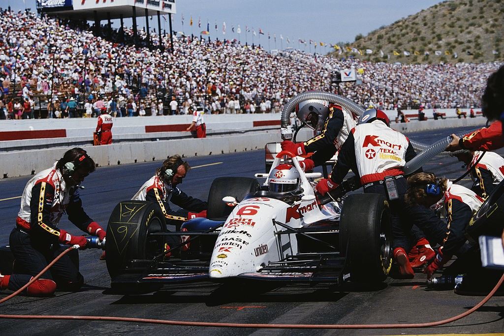
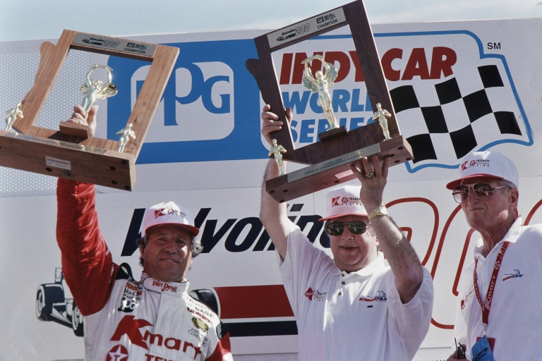

Melbourne - 04/03/2001
A VOZ DA EXPERIÊNCIA

Apesar dos jovens roubarem a cena, foi Mario Andretti, aos 53 anos, quem recebeu a última salva de palmas ao vencer adversários mais jovens e às vezes mais rápidos, reivindicando a 52ª vitória de sua carreira na Indycar.
David Phillips
Foi um daqueles dias em que a idade e a experiência superaram a juventude e a exuberância", disse alguém depois que o piloto de 53 anos Mario Andretti conquistou a 52ª vitória de sua carreira na Indycar. Na verdade, a idade e a experiência triunfaram sobre a juventude e a exuberância nos dois dias do primeiro fim de semana de corrida de 48 horas programado pela CART, o Valvoline 200 no Phoenix International Raceway. Tudo começou na manhã de sábado, quando a exuberância levou a melhor sobre Nigel Mansell (um jovem apenas em termos de experiência em pistas ovais). Como resultado, Mansell bateu seu Lola-Ford da equipe Newman/Haas no muro e passou a noite no Hospital Good Samaritan de Phoenix.
Juventude e exuberância continuaram a sofrer suas derrotas no dia da corrida. Primeiro, a sensação de Surfers Paradise, Robby Gordon, voltou à realidade com um choque quando se envolveu em um incidente com Buddy Lazier durante o aquecimento e bateu no muro. Em seguida, em sua 337ª largada na Indycar, Andretti separou Scott Goodyear da vantagem de sua primeira pole position na Indycar a poucos metros da bandeira verde. Mais tarde, Gordon encontrou o muro novamente, mas somente depois de uma corrida brilhante saindo do final do grid. Então, Paul Tracy, bem encaminhado para sua primeira vitória na Indycar após talvez a performance mais dominante em uma corrida da Indycar em muitos anos, bateu enquanto ultrapassava um carro mais lento - estando duas voltas à frente do pelotão. Mas juventude e exuberância não foram as únicas vítimas em Phoenix. Emerson Fittipaldi, dificilmente uma jovem inexperiente em termos cronológicos ou em termos de experiência na Indycar, também se envolveu em um acidente, desistindo de uma liderança igualmente insuperável na relargada após o acidente de seu companheiro de equipe. E quem estava esperando para colher os frutos desses sonhos despedaçados senão Andretti, que se encontrou com uma volta inteira de vantagem e precisando apenas navegar pelos restos do pelotão de 25 carros para conquistar a centésima grande vitória de sua carreira.
"Estou tão feliz quanto estava com minha primeira vitória", disse o mais velho dos estados-maiores do automobilismo Indycar. "Muito poucas pessoas sabem o quanto tenho me esforçado para uma vitória nos anos 90. Tive muitas oportunidades, mas um cara chamado Michael tinha seu nome nelas. Então, o mandamos embora e isso ajudou. Hoje foi um daqueles dias - um dia de sorte. Agradeço a Deus lá em cima porque tive tantos dias em que (uma corrida) foi tirada de mim." Havia muitas lições a serem aprendidas neste curso acelerado para a temporada que está por vir. Os críticos que se deleitaram com a transição até então sem esforço de Mansell da F1, mesmo quando Michael Andretti estava enfrentando dificuldades na McLaren, podem ser forçados a reavaliar suas opiniões. E aqueles no automobilismo Indycar que estavam começando a se perguntar se talvez não houvesse alguma verdade na afirmação de que seu esporte é apenas um tour sênior para pilotos de F1 fracassados podem estar respirando um pouco mais aliviados.
Desde o início, Mansell foi rápido, muito rápido, nos treinos em PIR. Ele fez a volta mais rápida na sessão de treinos de abertura e estava buscando mais na segunda sessão quando seu Kmart/Texaco Lola-Ford/Cosworth perdeu aderência na curva um e começou a deslizar lentamente em direção ao muro externo. Mas o impacto foi devastador. A caixa de câmbio do Lola explodiu em uma bola de fogo, abrindo um buraco considerável no muro, enquanto a suspensão traseira foi instantaneamente reduzida a destroços. O carro rodou mais 90 graus e deslizou até parar no meio da pista na curva dois.
Outra lição aprendida em Phoenix é que Scott Goodyear e Derrick Walker Motorsports são verdadeiros. Mal a maioria dos jornalistas internacionais deixou o local quando Goodyear reivindicou sua primeira posição de pole position na Indycar. “A pole position é importante, mesmo que seja apenas por um milésimo de segundo (Mario teve 20,895)”, disse Walker. “Mantém o ímpeto.” Três pilotos quebraram o recorde da pista de Michael Andretti, Fittipaldi, Roberto Guerrero e Paul Tracy, todos abaixo de 21 segundos. Como foi o caso na Austrália, Jimmy Vasser e Mark Smith fizeram um trabalho excepcional em carros de um ano atrás, com Vasser se posicionando na parte interna da Quinta Fila diretamente à frente de Smith, ambos mostrando suas habilidades enquanto o ainda-lutando Danny Sullivan estava atrás. Outra equipe que teve um início de temporada decepcionante é a Bettenhausen Racing; problemas de impulso relegaram Stefan Johansson para a 19ª posição no grid. Chegando na bandeira verde, Goodyear usou sua posição de pole position para uma boa vantagem para liderar Andretti na Curva Um, apenas para ver o Kmart Lola se agarrar à linha alta e passar para a liderança na Curva Dois. “Nós rodamos com uma asa de alta pressão na volta de aquecimento e parecia desequilibrar o carro”, disse Goodyear. “Então fomos com a asa traseira de média pressão; Mario obviamente tinha a configuração de alta pressão e eu decidi não forçar.”
Goodyear, por sua vez, não estaria mais presente para ver essa pergunta respondida, já que seu carro perdeu tração logo após a metade da prova, quando Tracy já estava duas voltas à frente de Fittipaldi. Mas enquanto Tracy estava recebendo a maior atenção, e com razão, os observadores estavam procurando por superlativos para descrever a performance do colega de 24 anos de idade, Gordon, em apenas sua segunda corrida em um oval. A partir do 20º lugar no grid, Gordon ultrapassou pilotos como Sullivan, Unser, Luyendyk, Fabi e Boesel a caminho do sexto lugar na volta 50. Em pouco tempo, Gordon estava desafiando Andretti pelo quinto lugar, que ele conquistou pela metade da corrida, depois melhorou com uma ultrapassagem dura sobre Roberto Guerrero na Curva Dois. Mas quatro voltas depois, tudo acabou quando Gordon ficou preso ao ultrapassar um grupo de carros mais lentos. "Eu estava no controle", disse ele, "mas devo ter entrado em ar sujo. Simplesmente rodou comigo." Após a bandeira amarela, Tracy e Fittipaldi continuaram sua demonstração, enquanto Guerrero consolidou o terceiro lugar e Andretti começou a se recuperar, embora três voltas atrás de Tracy. "Após cerca de 10 voltas, meu pneu traseiro direito foi embora", disse Andretti. "De então em diante até o final do primeiro trecho, tive que lidar com isso e perdemos muito tempo. Mas trabalhamos nisso, mudamos o ajuste e ficou melhor e melhor durante a corrida. Mas Paul estava voando, sem dúvida. Do jeito que eu estava configurado, não havia como lidar com ele. Ele poderia ir para fora, para dentro, em qualquer lugar que quisesse."
Se a primeira rachadura no dia da juventude da Indycar apareceu quando Gordon ficou preso na sujeira do ar, a juventude foi derrubada quando Tracy chegou em Jimmy Vasser na volta 161. Vasser manteve sua linha mesmo quando Tracy virou para ultrapassar pelo lado baixo; quando Tracy foi forçado a apertar sua linha, a traseira do carro deslizou e ele bateu no muro externo. "Eu sabia que ele estava atrás de mim", disse Vasser. "Ele estava a alguns comprimentos de carro na entrada da Curva Um. Eu nunca vi uma asa ou uma roda ao meu lado, então eu segui minha linha normal e esperei deixá-lo passar indo para a Curva Três. Quando saí da Dois, vi a luz amarela acesa e Paul não estava nos meus espelhos". Como você pode imaginar, Tracy tinha uma perspectiva diferente: "(Vasser) se moveu, pensei em me dar espaço. Eu segui minha linha e me comprometi a entrar na curva. Então ele veio para baixo e eu tive que apertar a curva e recuar. Nesse ponto, o carro girou".
Bem, nós pensamos, o novo líder certamente exercerá um pouco mais de prudência. Mal terminamos o pensamento, quando Fittipaldi rodou na parede menos de uma volta após a bandeira verde. A queda de Fittipaldi, descobriu-se, foi precipitada por detritos do acidente de Tracy. “Não parecia ser um problema enquanto corríamos sob bandeira amarela”, disse Fittipaldi. “Quando me aproximei da curva três, o carro vibrou e eu perdi o controle. Restavam apenas 29 voltas na corrida. Eu não estava forçando o carro. Eu sabia que tudo o que tinha que fazer era levar o carro até a linha de chegada. Com certeza estou desapontado.” Andretti se encontrou uma volta inteira à frente de Boesel, com Vasser três voltas atrás. “Eu me tornei tão insensível, eu pensei que se algo fosse acontecer, iria acontecer”, disse Andretti. “Eu só queria trazer este bebê para casa. O motor estava funcionando lindamente. Minha única preocupação era que eu pudesse pegar alguns detritos dos acidentes.” Mas neste dia, a sorte e uma medida bastante justa de habilidade e experiência estavam do lado de Mario - finalmente. “Eu sou o eterno otimista”, disse ele. “Eu nunca desisto. Nunca. É por isso que ainda estou por aqui, é por isso que continuo tentando. “Realisticamente, eu sei que ainda sou rápido o suficiente para vencer. Eu tenho uma equipe atrás de mim que sei que pode fazê-lo. Mais cedo ou mais tarde, tinha que acontecer para nós.” E sempre o otimista, Andretti enviou um aviso final. Perguntado se a vitória irá alterar seus pensamentos sobre a aposentadoria, ele respondeu: “Oh, sim, muito. Você pode ter que lidar comigo por mais alguns anos ainda.”
A metáfora compara o ITT Automotive Detroit Grand Prix a um episódio de televisão, com altos e baixos, um final previsível e um toque de controvérsia após o show. A comparação é feita com o programa de TV “A Ilha de Gilligan”, onde Roger Penske é comparado ao capitão e Paul Tracy a Gilligan, que causa agitação sem intenção. A controvérsia pós-show envolve Wally Dallenbach, chefe de equipe da CART, com Belle Isle como cenário. Ginger e Mary Ann são substituídas pelas garotas do ZZ Top. O fim de semana de corrida na ilha é uma oportunidade para refletir sobre a dominação da Team Penske-Marlboro e o futuro das corridas da Indycar.
